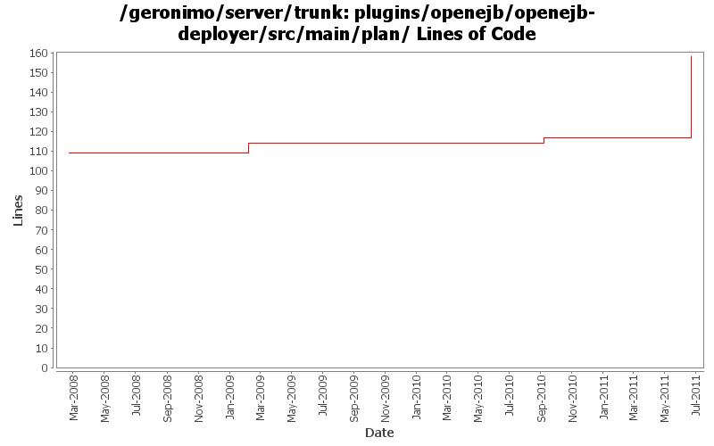

[root]/plugins/openejb/openejb-deployer/src/main/plan

| Author | Changes | Lines of Code | Lines per Change |
|---|---|---|---|
| Totals | 5 (100.0%) | 55 (100.0%) | 11.0 |
| genspring | 1 (20.0%) | 41 (74.5%) | 41.0 |
| djencks | 1 (20.0%) | 11 (20.0%) | 11.0 |
| vamsic007 | 1 (20.0%) | 3 (5.5%) | 3.0 |
| gdamour | 2 (40.0%) | 0 (0.0%) | 0.0 |
GERONIMO-6018 Geronimo does not support @ManagedBean defined in app client module.
1, added a openejb-client module to only contain openejb system and managed container.
2, add a ClientEJBBuiler so that client-deployer could use it to build @ManagedBean in app client module.
3, updated EJBModuleBuilder and AppClientModuleBuilder to do the ejb in clientmodule deployment work.
41 lines of code changed in 1 file:
GERONIMO-5226 Pass container ValidationFactory to the persistance manager when creating an entity manager.
o Hook the BValModuleBuilderExtension to openejb deployer.
o Add ValidatorFactoryGBean as a parameter to PersistenceUnitGBean constructor.
3 lines of code changed in 1 file:
GERONIMO-4531, GERONIMO-4523 Simplify builder collections. Make security principal-role mappings independent of the application
11 lines of code changed in 1 file:
1. Add SessionManagerListener to the clustering API. This allows clients
of local SessionManagers to receive callbacks when corresponding
remote SessionManagers join or leave the cluster.
2. Arbitrary WADI clustered services can now be registered: distributed
services are wrapped within ClusteredServiceHolder GBeans which are injected
to BasicWADISessionManager and registered with the underlying WADI
ServiceRegistry.
3. Add support for clustering of SFSBs.
The structure mirrors the one applied for the clustering of Jetty and
Tomcat, i.e. two modules and two configurations are added:
- geronimo-openejb-clustering-wadi: defines a ClusteredRPCContainer
implementation for SFSBs and infrastructure components maintaining a
bookkeeping of the connection addresses a clustered SFSB client can connect
to. The monitoring components, i.e. NetworkConnectorMonitor and
NetworkConnectTracker, works as follows:
o When an OpenEJB NetworkConnector service starts, NetworkConnectMonitor
registers the address of this NC with the clustered service
NetworkConnectorTracker and this for all the locally running clustered SFBS
deployments.
o When an OpenEJB NC services stops, NCM executes an unregisteration reverting
the effects of a NC service start.
o When a clustered SFSB deployments starts, NCM registers its deployment id
with the clustered service NCT for all the locally running NCs addresses.
o When a clustered SFSB deployment stops, NCM executes an unregisters reverting
the effects of a deployement start.
o When a node hosting an EJB module having clustered SFSBs stops or fails, NCM
updates the local NCT so that all the connection addresses registered for
all the clustered SFSB deployments of this node are removed.
- geronimo-openejb-clustering-builder-wadi: defines a builder to handle the
new substitution group element 'clustering' added to geronimo-openejb-2.0.xsd.
The clustering builder works nearly the same than for Jetty and Tomcat except
for the following specificities:
o A (WADI) clustered NCT service is registered.
o The container id for the clustered SFSBs is set to the Geronimo provided
clustered SFSB container implementation.
- openejb-clustering-wadi: declares Geronimo provided clustered SFSB
container implementation.
- openejb-clustering-builder-wadi: declares clustering builder.
0 lines of code changed in 2 files: